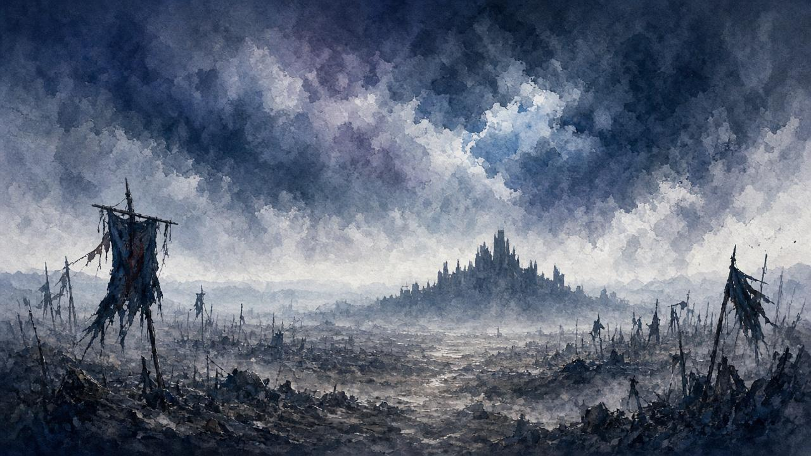

A · 點入仙峯寺
- 鬼佛「葦名城」附近：吊橋／斷枝勾索 → 大橋 → 捨て牢入り口（廢坑入口） → 升降機上 金剛山・仙峯寺。
- 亦可後段由其他鬼佛轉入；本頁以「城→廢坑→寺」為預設最短說明。
未完成檢查點 1–4（弦一郎→九郎→一心問清不死斬下落→再回九郎）＝本堂仍坐即身佛／無鈴。先核上方前置。

路徑／取得攻略（非 BOSS 戰卡）· Mortal Blade（拝涙）· Senpou Temple → Folding Screen Monkeys → Divine Child
⚠ 大佛背後洞穴＝拳法傳書旁路，不是屏風猿／幻廊入口。幻廊入口＝本堂祭壇鈴（劇情旗齊後才出現）。
金剛山・仙峯寺 → 本堂祭壇鈴 → 幻廊 屏風猿 → 奧の院 變若卿子 → 選「拔く／拔出」
不死斬（拝涙）＋奧義・不死斬り（Mortal Draw）。可對蟲憑き／不死敵忍殺收尾（本頁只點名）。

對照 after-owl 迷路頁：步驟＋路標。只 bake 主片三窗；可選支線標 EMPTY／另頁。
四猿各弱點（核對用，唔當逐招秒）。詳見下方 屏風猿表。
主片 1SNd5R5TWYw（Purification Walkthrough 15｜dur 2065）。只 bake 下表三窗；跳過 520–899（傳書支線）、1706–2065（Monkey Booze）。細路標／特寫／奧義示範＝EMPTY。
覆蓋：城／廢坑／升降機 → 境內推到本堂方向
主線推進參考；細路標見 EMPTY 卡
0–520s（0:00–8:40）· 1SNd5R5TWYw @ 0:00 → · YT chapter「Way to the Main Hall of Senpou Temple」· VERIFIED
覆蓋：幻廊四猿合集（唔拆逐隻微秒）
解謎摘要＋合集窗；紫／綠／隱形特寫＝EMPTY
899–1481s（14:59–24:41）· 1SNd5R5TWYw @ 14:59 → · YT chapter「Folding Screen Monkeys」· VERIFIED
覆蓋：奧の院對話 → 拔出不死斬
選「拔く」入手；奧義鍵位示範＝EMPTY
1481–1706s（24:41–28:26）· 1SNd5R5TWYw @ 24:41 → · YT chapter「Divine Child of Rejuvenation, Mortal Blade」· VERIFIED · CAP≤2065
狀態：主片 0–520 已覆蓋大段；細路標未 frame scrub
外連主片首窗；唔估細秒
主片外連：1SNd5R5TWYw @ 0:00 → · 未窗內 frame scrub
狀態：可選支線；唔擋取得不死斬
另頁／外連；本頁唔 bake
主片外連：1SNd5R5TWYw → · 未 scrub
狀態：特寫未鎖；上表屏風猿窗為合集
先睇合集窗；特寫等 scrub
主片外連：1SNd5R5TWYw @ 14:59 → · 未 scrub
狀態：入手即學；鍵位／耗形代示範未 scrub
先入手；示範窗後補
主片外連：1SNd5R5TWYw @ 24:41 → · 未 scrub
狀態：本頁只點名用途；唔展開戰術
蟲憑き／不死敵忍殺收尾另線
外連／另頁 · 未 scrub
核對用弱點表。逐隻微章／特寫＝EMPTY；合集窗見 屏風猿短片。
| 猿 | 要點 |
|---|---|
| 隱形（白） | 進場後轉身／聽腳步／看發光足跡 |
| 橙／紅（警報） | 感官弱；速殺免叫援 |
| 紫（視力） | 誘入暗室（熄燈房）再近身忍殺 |
| 綠（聽力） | 中央鐘擾亂聽覺；或瀑布噪音房接近 |
| 症狀 | 核對 |
|---|---|
| 本堂仍坐即身佛／無鈴 | 檢查點 1–4 未齊（尤其一心問清不死斬下落，並再回九郎覆命） |
| 望樓只有字條、見不到一心 | 先找艾瑪問下落 → 天狗「清鼠」任務完成後，再回望樓見一心 |
| 走進大佛後洞穴以為進入幻廊 | 走錯；回大佛前祭壇找鈴 |
| 本堂已有鈴但不知如何進入 | 調查／互動祭壇上的鈴（不是幻廊內的「幻廊之鈴」——那是進幻廊後用來重置未打死猿的位置） |
| 找不到仙峯寺 | 城鬼佛回頭勾索→廢坑入口→升降機 |
| 幻廊迷路 | 搖幻廊之鈴重置；按上表逐隻清 |
| 不知刀有何用 | 蟲憑き忍殺；奧義耗形代；四材／點香前置 |
主片全片嵌入作對照。三窗已喺短片卡鎖秒；其他片本次無 chapters／未穩核 → 唔 bake，只可外連。
片長 2065s（34:25）· 三窗 0–520／899–1481／1481–1706 · CAP≤2065
本次無 chapters 或未穩核：BGx1yJttEg0、qFgZqZEXUdA、_2qpCwyJWg8、PCN53PbsMxU、DsM8aYv-PDU。
短片卡只 bake 1SNd 三窗。細路標／特寫／奧義示範 EMPTY 等 frame scrub。核對日期：2026-11-07（Asia/Hong_Kong）。
路標唔清楚、想加邊段、有錯漏——丢句說話。留言經 Netlify Forms 直達網主信箱／後台，唔再只係本機保存。
你嘅意見已送出俾網主。想再講可以繼續填。